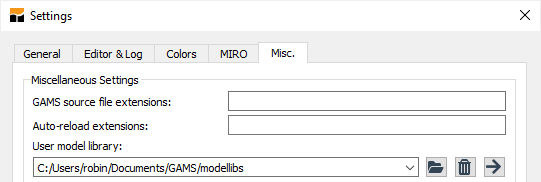
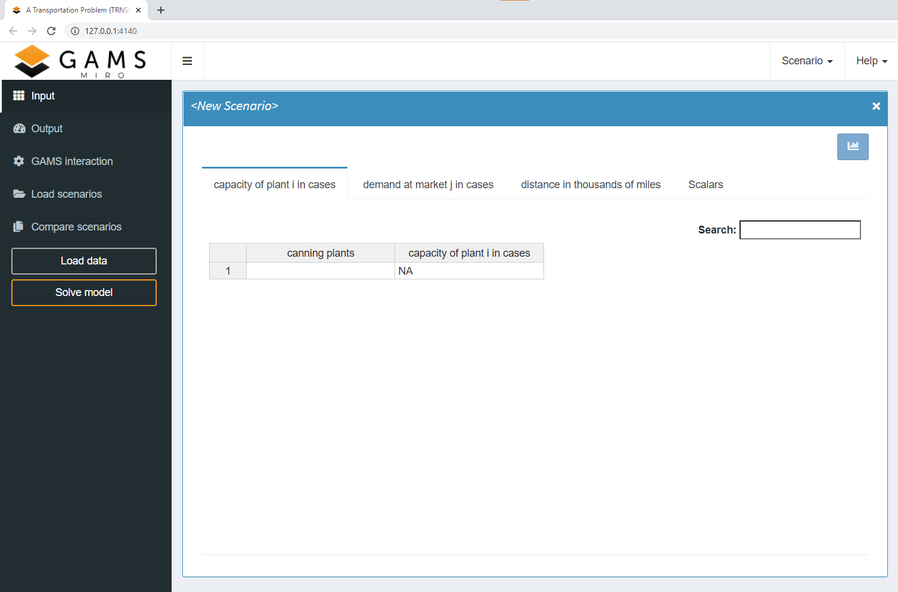
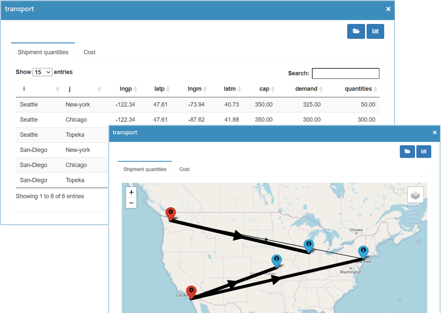
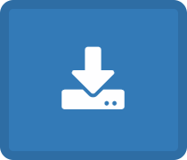
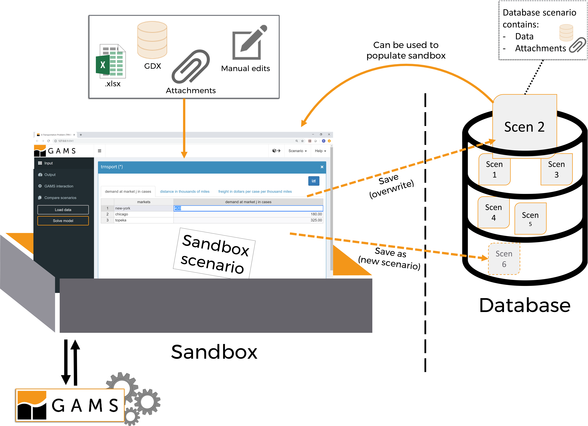

The well-known model from the GAMS model library is called trnsport. To avoid two models of the same name, the GAMS MIRO Demo model is called transport.
Getting started
Introduction
This chapter guides you through the first steps of using GAMS MIRO and shows you how to deploy your own GAMS models.
In this as well as the subsequent sections we will mainly deal with the GAMS MIRO base mode. In the base mode, you can supply your models with input data, generate, display and save the results of your optimization as well as compare different scenarios with each other, everything visually supported by various plotting tools. The Hypercube mode will be the subject of an extra section, see here.
Demo Applications
To get a feeling for the use of GAMS MIRO, we recommend to have a look at the demo applications first which you can download here. To use the demo applications, unzip the archive and put the extracted folder miro_lib into the user model library directory. Via GAMS Studio you can find this location by clicking on File → Settings → Misc. → user model library:

Next, if you are using GAMS Studio, go to GAMS → Model Library Explorer (shortcut F6) and click on the new entry GAMS MIRO model collection. There you will find the ready-to-use demo applications:

If you are using the command line, you can use the following command to access the applications: gamslib -lib /location/to/the/miro_lib/mirolib.glb <modelname>, e.g:
> gamslib -lib /location/to/the/miro_lib/mirolib.glb sudoku
The following demos are available:
- Transport
This problem looks for a least cost shipping schedule that meets requirements at markets and supplies at factories. More about this transportation problem, see here.Note: - Transport_live
A "live" version of the transport model. Extends transport in the sense that locations of suppliers and markets can be adjusted right from within MIRO. Geographical information about the cities you entered is automatically fetched and the distance matrix calculated via embedded Python code.
This model needs an internet connection. - Pickstock
Optimization model to find a small subset of stocks of the Dow Jones index together with some weights, such that this portfolio has a similar behavior to the overall index. - Sudoku
Optimization model to find a solution for the classical combinatorial number-placement puzzle Sudoku. - Kport
This problem computes minimal cost solutions satisfying the demand of certain product portfolios. More about this optimization problem, see here.
Start GAMS MIRO
Let's take the famous trnsport example from George Dantzig to guide us through this documentation: We own a bunch of factories and wish to find a least cost shipping schedule that meets the demand at markets we are shipping to. Furthermore, the capacity constraints of our factories must not be violated.
In order to launch the MIRO app for this model from within GAMS Studio, we open the model from the GAMS MIRO model collection and choose Run base mode from the MIRO menu.

+ Advanced: Start MIRO using the command line
Structure of GAMS MIRO
Below you see the input mask as it appears after the launch.

The screen is essentially divided into two parts:
Navigation bar:
On the left side you can find the navigation bar. Here you can switch between different views:
- Input:
Visualization & configuration of input data for the next GAMS run. - Output:
Visualization of output data. - GAMS interaction:
While solving a model with GAMS this section shows the current status of your run as well as the log and listing (lst) files. You can add a custom log here too. - Compare scenarios:
Module for the comparison of results / scenarios in a split screen mode or a multi-scenario comparison mode (also referred to as tab view).
In addition, the buttons for loading input data and for starting a GAMS run are located here:
- Load data:
Load input data for a model run. This can be a local file, existing data from the database or scenarios coming from the Hypercube mode. - Solve model:
Solve the GAMS model with the current set of input data. This will run your GAMS model and collect the results when it finished executing.
Main window:
The main window always displays the content of the section selected by the user in the navigation bar. Here, for example, data is visualized, scenarios are compared and analyses are carried out.
Besides navigation bar and main window, some functions are accessible in the header bar:
- Scenario:
Scenario management - load, save, edit, delete and export scenario data. - Help:
Link to this documentation, the GAMS World Forum and license information.
Tip:
Take a look at our cheat sheets to get to know the MIRO interface and its components better!
How to work with GAMS MIRO
There are several ways to use GAMS MIRO. However, a typical workflow could look like this:
- Import input data
- Modify the data if desired
- Solve GAMS model
- Inspect the results (in the form of tables and/or charts)
- Save the scenario data or discard the results
- In addition, already saved results can be re-imported and compared at any time.
What is a scenario? What is a sandbox scenario? What data is used for a model run?
To understand the MIRO data concept, what a scenario is and how it differs from a sandbox scenario, you should have a look at the sectios data concept and scenario concept!
Import data
A GAMS MIRO app is quite useful if there is data to be visualized, e.g. in the form of tables, diagrams or other charts. This applies to output data as well as input data. Input data that is to be visualized in MIRO can be imported either from existing scenarios in the database or via a local file (currently, this can be either a gdx container or an Excel spreadsheet). To import such data, click on the Load data button in the navigation bar. The following dialog pops up:


You can decide whether you want to import an existing scenario from the database or load a file from your local computer.
Scenarios that you have previously named and saved in the MIRO database will be displayed in Database.
When you start a GAMS MIRO app for the first time, GAMS automatically extracts the data from your model and loads this data into the
database. This happens every time you rebuild your MIRO app i.e. every time you launch it in the
development mode via GAMS Studio
or the command line. A special scenario with the name default is created for this purpose and overridden every time you
rebuild your app!
Tip:
Every time you start a MIRO app in development mode (via GAMS Studio or the command line), the data relevant to MIRO is extracted from your model and stored in the MIRO database as a special scenario named default.
To import a file from your local machine, either in the form of a gdx container, an Excel spreadsheet or a CSV file, select the menu item Local and click on browse. Navigate to the directory where your file resides and select it. Confirm the data import with a click on import. If you started with an empty sheet, a new, unnamed scenario is now shown in the interface. To save it, click on Save as and give it a name.
+ Excel spreadsheeet - import rules


Instead of importing all the datasets for your model, you can also select the symbols to import manually. To do so, click on Manually choose datasets and choose those symbols to be imported from the uploaded spreadsheet. This will cause MIRO to ignore other datasets.
Besides the local and the database import there is a third option: Hypercube. This tab allows you to import scenarios that have been generated and saved in the Hypercube mode. Such a scenario that is generated in Hypercube mode corresponds to a scenario from the base mode, except that the former additionally contains a trace file. Since those scenarios are identified by their hash value (read more about this here) and not by a user-defined name like in base mode, you need to import them differently.

Please refer to the chapter about scenario selection in Hypercube mode to learn how to retrieve the hash value of a Hypercube scenario.
Import multiple scenarios on startup
In addition to the options mentioned above, which can be accessed directly from MIRO, (multiple) scenarios
can also be imported automatically when starting an application. To do this, the scenarios to be imported
(GDX or Ecxcel file) must be put in the folder data_<modelname> (located in
the model directory). With the next start of MIRO, those scenarios are imported automatically.
Note:
All files in the data_<modelname> folder are deleted after they have been imported.
Data manipulation
The tables that were empty before are now populated. In the upper part of the main window, you can navigate between different tabs to switch through the different GAMS symbols that you have specified in your model.
We can now change the input data. You may want to edit individual cells, sort by a different column or add/remove entire records (rows in the table). In our transport demo you have the option to edit the capacities, the demand, the distance matrix and several scalar values:

Solve the model
A click on the Solve model button starts the model run. In the background GAMS is called and the model transport.gms is started. The values set by us in MIRO now serve as input data for the model.
During the calculations, MIRO automatically switches to the section GAMS interaction. There you can see the current GAMS log and lst files. If you specified a custom log this is also shown here.

Note: Since the models of the demo applications are solved very quickly, this step is sometimes hardly visible. The menu entry GAMS interaction can also be viewed at any time after a model run.
As long as the calculations are running in GAMS, the Stop button on the left can be clicked.
A first click on this button sends an interrupt request to the running job in order to perform a graceful stop and collect an incumbent result back from the execution if the solver supports this feature.
A second click sends a request to stop the running job immediately.
After the run, the view changes again to the Output section.
Inspect results
In the Output section the results are visualized.
As with the input data, a distinction is made between GAMS parameters and scalar values. The GAMS parameters are each visualized in a separate tab and the scalars are summarized in a table.
If you have configured a graphical representation of your data, you can also see it here. In the model Transport a plot for the transport schedule is configured in the form of a map, see figure below.

With a click on the  button in the upper right corner you can switch between a plot and the tabular representation of the data.
button in the upper right corner you can switch between a plot and the tabular representation of the data.
All scalar results are summarized in Output Scalars. The default visualization selected here are tiles. Like before, you can switch between graphical and tabular representation with a click on the  button.
button.

Download temporary files:
If this option is not disabled, all temporarily created files of the model run (like solution reports or the lst and log files) can be downloaded either separately or as a ZIP archive with a click on the  button.
button.

Save scenario
General
The set of all the input and output data is what we call a scenario. Data that is currently loaded in the MIRO interface (in memory) is what we call a sandbox scenario (more on this here). A sandbox scenario can be saved at any point. The menu where you can interact with your currently active scenario can be found in header bar of your MIRO app:

Here, we can choose between the following options:
- Save
Saves the currently active sandbox scenario under an already specified name. Data of the initially loaded scenario is overwritten.
Tip:Unless otherwise configured, the log and lst file of the GAMS run will also be saved and can be accessed when re-loading the corresponding scenario.
- Save As
Saves the currently active sandbox scenario under an new name. If the sandbox scenario has no name yet, only this option is available for saving.Optionally, you can add tags to the scenario. Tags are stored together with the scenario data. If you want to find a scenario later on, you can search for a given tag. This may help you to better find a certain scenario or a set of scenarios that share certain attributes. Also, if your sandbox scenario contains attachments or you have defined user access permissions, you can adopt these settings for the scenario to be saved. - Edit metadata
Allows you to edit scenario metadata, i.e. the scenario name and/or the tags assigned as well as file attachments and scenario access permissions.
General options:
In the general options tab you can change the scenario name and add/edit scenario tags.Attachments:
With the attachments option, you can attach files to the (sandbox) scenario you currently have open. These can be files of any format. MIRO distinguishes between two types of attachments: attachments that can be seen and read by your GAMS model and files that can not be seen. For example, if you want to provide data to your model that doesn't need to be visible/modifiable in the UI (e.g. in the form of a gdx container or Excel files), attachments that your model can read are what you are looking for. In case you just want to add some report about a particular scenario, which is irrelevant for the GAMS model, you should not allow the model to read this file. Note that all files that you allow your model to read need to be first downloaded into the working directory before GAMS is executed. Thus, it is advisable to select only those files to be readable that are actually relevant for the optimization run.
Attachments added to a sanbox scenario are not automatically saved! If you want to apply the changes to a database scenario, you have click on save.
Access permissions:
With access permissions you can determine who can access your scenario. You can differentiate between read permissions (users can load the scenario but are not authorized to edit or execute it), write permissions (users can edit the scenario), and execution permissions (users can solve the model with your scenario data).Note:If you edit metadata, the changes will initially only affect the loaded sandbox scenario. You have to save the scenario, so that the changes are stored in the database and are available at a later stage.
- Export
Download of the scenario data in the form of a gdx container, as an Excel spreadsheet or as CSV files. - Delete
Delete a scenario from the database.
Scenario comparison
The scenario comparison mode is useful if you want to compare the input and/or output data of different model runs. Scenarios from the database as well as the currently loaded sandbox scenario can be used for comparison. There are two different types of comparison available, split screen mode and tab view mode.
Split screen
If two scenarios are to be compared, the split-screen view is particularly suitable. Here the data of two scenarios can be compared directly next to each other.

If you are in the split screen view, you can load scenarios you want to compare.

You can choose between:
- Load scenario:
Load saved scenario data from the database. - Load active:
Load the sandbox scenario which is opened in the Input / Output section.
Tip:
Via the  button in the upper right corner you can access the input and output data which have been communicated with the GAMS model.
Tab view
In addition to the split screen mode, scenarios can be loaded into tabs (as you know it from e.g. your internet browser). This allows to compare more than two scenarios. You can use the button in the navigation bar to switch between the splitscreen view and the display of scenarios in tab pages.

Tip:
If you have opened scenarios in the split screen mode and switch to the tab view, the scenarios from the split view are pre-selected in the load dialog so that you can easily continue using them.
Comparison mode
The comparison mode makes comparing scenarios more convenient. It can be used in both the split screen and the tab view. As soon as this option is activated via the Comparison mode button in the navigation bar, the switch to another data set of a scenario is also performed for all other open scenarios. This means that if you change the dataset to be displayed in one scenario (e.g. switch from 'Price' to 'absolute error' in the image above), the view also changes for all the other scenario(s) loaded in the comparison mode.
Tip:
For many operations in MIRO there are shortcuts. Especially when comparing scenarios it can be helpful to switch through the different tabs with shortcuts. To learn more about shortcuts, check out our cheat sheets!
Data concept
To understand the concept of data exchange between the GAMS model and its MIRO application, let's start with the following illustration:

- Data is loaded into the MIRO interface. These come either from the internal database, from external data sources such as Excel or GDX or are entered manually, but they do NOT come directly from the GAMS model.
- When clicking on solve, the data visible in the MIRO input section is sent to the GAMS model. All data of affected symbols in the model will be overwritten. Symbols that are not visible in MIRO are not touched.
- The model is now run with the updated data.
- Afterwards the results are sent to MIRO and displayed in the output section. From there, data can be saved in the internal database and/or exported as a file.
A little more detail:

Scenario concept
In addition to the data concept, MIRO's scenario concept also needs to be understood.
What is a scenario?
- We call the collection of input and output datasets that result from a particular model run and which are communicated with MIRO a scenario.
- The MIRO user interface can be seen as a sandbox. Data that is loaded into the interface is therefore located in this sandbox as a sandbox scenario.
- Scenarios from the database can be loaded into the sandbox. The data of the sandbox scenario can be modified. Data modifications can come from local files or can be entered manually. A click on save overwrites the original scenario in the database with the modified data. Alternatively, a new scenario can be created using save as. The original scenario in the database remains unchanged then.
- A sandbox scenario can also be initially created as an empty scenario independent of the database and then filled with data (GDX, Excel, CSV). A scenario created in this way initially does not have a name. As long as a scenario is unnamed, i.e. it is not saved in the database with an individual name, the data is shown exclusively in the interface and gets lost if the MIRO application is closed.
- Attachments are part of a scenario. If attachments are added to a sandbox scenario, they are included when saving this scenario.

Additional Features
Manage multiple scenarios
The mode of GAMS MIRO that you learned about in this chapter is designed to configure and solve one scenario at a time. But what if we want to solve a multitude of such scenarios with different parameterizations one after the other? To avoid having to configure and solve each scenario individually, there is another mode built into MIRO that we call the Hypercube mode. In this mode, you can automatically solve scenarios with several different parameterizations.
We developed this mode to efficiently generate, store and analyze a multitude of scenarios. Look at the chapter about the Hypercube mode to learn more.
GAMS MIRO Server
In the most basic setup - GAMS MIRO Desktop - both the MIRO application and GAMS itself are installed on the same computer and run exclusively on this machine. But MIRO is not limited to this setup: You may also trigger your GAMS jobs to be solved in the cloud. For you nothing changes, the interface remains the same. GAMS MIRO Server also allows you to run both the GAMS execution engine as well as GAMS MIRO in a highly scalable cloud environment. Your optimization applications can then be accessed from any modern web browser.

GAMS MIRO Server adds multi-user and authentication support as well as many enterprise features such as load balancing, rolling updates and much more. If you are interested in this version, please contact us!